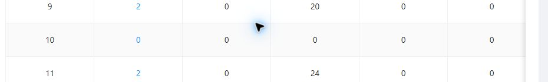
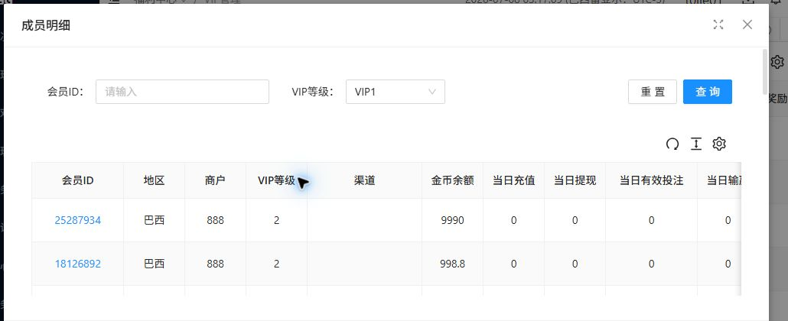

VIP管理查看会员 - Bug 去重与状态整理
基于人工测试、Multica 对照测试和后端对 VIP 等级配置的反馈整理。更新时间：2026-07-09。
结论
| 分类 | 数量 | 说明 |
|---|---|---|
| 回归通过 | 1 | BUG-001 已回归通过：成员数量为 0 时不再是 link/pointer/button，点击不打开成员明细弹框。 |
| 产品接受 | 1 | Q-001 已确认维持现状：VIP0 对应 grade=1、VIP1 对应 grade=2，列表展示 grade 数字、弹框展示 VIP 名称为接受口径，非 bug。 |
| 重复项 | 0 个独立新 Bug | Multica 没有发现第三个独立问题；它加深了 0 成员数量问题的实际行为证据。 |
合并后的问题清单
| ID | 标题 | 当前状态 | 来源 | 处理建议 |
|---|---|---|---|---|
| BUG-001 | 成员数量为 0 时仍为可点击入口，且 Multica 复测记录到点击后弹出成员明细 | 回归通过 / 已修复 | 人工测试 + Multica 对照测试 | 已回归通过，保留历史记录；当前验证 0 值已移除 link/pointer/button 样式，点击不再打开成员明细弹框。 |
| Q-001 | 列表 grade 数字与弹框 VIP 名称展示口径不一致 | 产品接受 / 非 Bug | 人工测试 + Multica 对照测试 + 后端反馈 | 产品/后端已确认维持现状，列表展示 grade 数字、弹框展示 VIP 名称为接受口径；关闭为非 bug。 |
BUG-001 详情
| 建议级别 | P1 / Major |
|---|---|
| 环境 | UAT 后台：http://site.bx-tytest.xyz/#/member/level；路径：福利中心 / VIP管理 / 查看会员；站点：巴西站-测试；商户：888。 |
| 期望结果 | 成员数量为 0 时不可点击；不应显示为蓝色 link 或 pointer；点击后不应出现查看会员/成员明细弹框。 |
| 回归结果 | 2026-07-09 回归通过：VIP10 成员数量 0 为普通 TD，无 button / anchor，颜色为 rgba(0, 0, 0, 0.85)，cursor 为 auto；点击后未打开成员明细弹框。 |
| 是否重复 | 不是新增独立 Bug。Multica 的“点击后弹框”是同一 0 值点击问题的更强证据，应合并进 BUG-001。 |
| 残余不确定性 | 人工首测与 Multica 对照测试对“点击后是否弹框”结果不同。建议前端修复前先在干净列表状态下复核一次 VIP10 的 0 点击行为；无论是否弹框，0 值可点击样式本身已违反需求。 |


Q-001 展示口径待确认
| 原观察 | 点击 VIP1 成员数量时，弹框行内 VIP等级为 1，但顶部筛选显示 VIP0；点击 VIP2 时，行内 VIP等级为 2，但顶部筛选显示 VIP1。 |
|---|---|
| 后端反馈 | 后端等级配置是 VIP0 对应 grade=1，VIP1 对应 grade=2，第一等级叫 VIP0。 |
| 当前定性 | 产品/后端已确认维持现状，VIP0 对应 grade=1、VIP1 对应 grade=2；列表展示 grade 数字、弹框展示 VIP 名称属于接受口径，非 bug。 |
| 给产品的问题 | 后端确认 VIP0 对应 grade=1，VIP1 对应 grade=2。当前列表展示数字 grade=1，点击后弹框筛选显示 VIP0。请确认产品期望：列表和弹框是否允许一个显示 grade 数字、一个显示 VIP 名称？还是要求统一展示为同一种口径？ |
| 处理结论 | 产品接受映射，关闭为非 bug。 |

2026-07-09 BUG-001 回归结果
| 回归结论 | 通过 / 已修复 |
|---|---|
| 执行报告 | ../multica-runs/vip-member-count-regression-20260709/regression-report.html |
| 关键证据 | VIP10 成员数量 0 无 link / pointer / button 样式，点击后未打开成员明细弹框。 |


关联产物
| 人工测试 Bug 单 | vip-member-count-bug-tickets.html |
|---|---|
| Multica 对照 Bug 单 | ../multica-runs/vip-member-count-squad-check/bug-tickets.html |
| Multica 对照测试报告 | ../multica-runs/vip-member-count-squad-check/test-report.html |